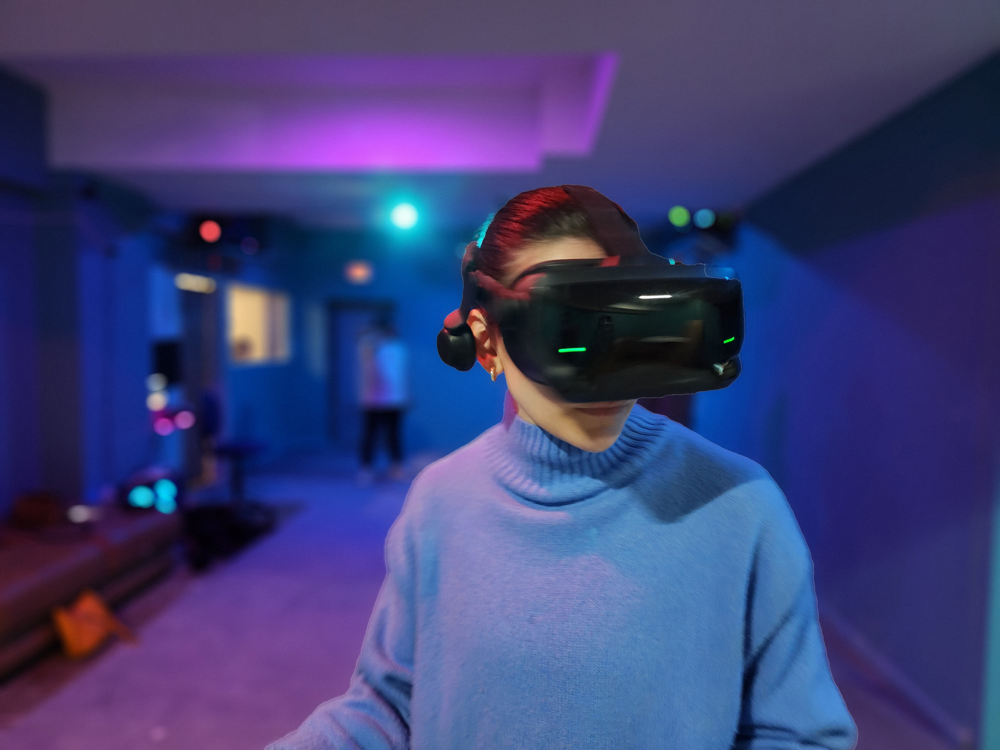
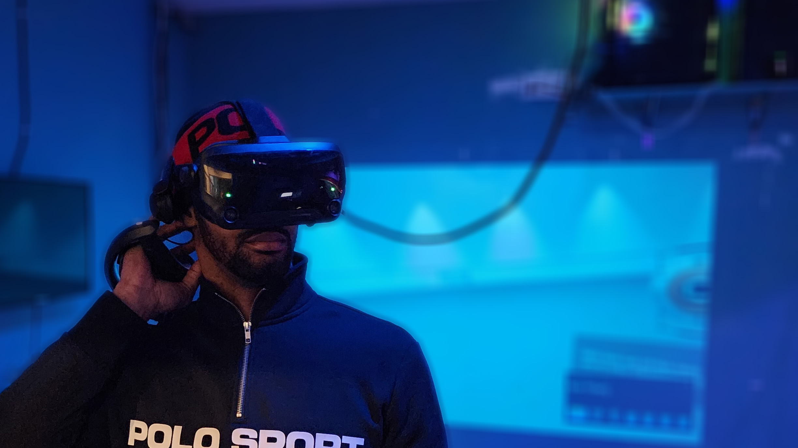

Welcome to Bill's Crib, the vanguard of entertainment at Perplexity Games, where we harness the power of Virtual Reality (VR) to transform the impossible into reality. Picture yourself stepping into an alien landscape, soaring through vast skies, or combating hordes of zombies. Thanks to our innovative VR Arcade, complemented by cutting-edge technology and unparalleled customer service, such immersive experiences become your reality.
About Us


Our Story
The genesis of our story lies with Bill, a seasoned software engineer from Cleveland with an enduring passion for STEM and video games. After securing formal education in Mathematics, Software Engineering, and Data Science, Bill embarked on an endeavor to fuse his passion and expertise into a thriving business. He carved his path by integrating VR into popular games and crafting a custom multiplayer Minecraft server enabled with VR and raytracing. These adventures served as the cornerstone for Bill's Crib, a distinctive VR destination designed to transport you to an array of virtual worlds.

Our VR Experiences
Catering to both novice VR users and seasoned gamers, we ensure your experience in our arcade is comfortable, enjoyable, and fully immersive. Beyond mere touch and sight, our state-of-the-art equipment - including high-end headsets, vests, and props - promise a multisensory adventure. Here, you can move freely, feel the thud of impacts, and even experience the recoil of in-game weaponry. VR at Bill's Crib extends beyond the realm of traditional gaming. Whether you yearn to fly through the cosmos or outlive a zombie apocalypse, the choice is entirely yours! Moreover, those who embrace VR today are shaping its future. By stepping into our VR Arcade, you're not only partaking in a thrilling adventure but also influencing this revolutionary technology's societal role. Our pride at Bill's Crib lies in delivering more than just a VR experience. We offer a meticulously fine-tuned service with every technical detail seamlessly taken care of. Our staff, adept in VR technology, are on hand to assist and ensure your gaming session is smooth, uninterrupted, and truly unforgettable. With the ability to accommodate on-site multiplayer games, we're the go-to spot for you and your friends to forge shared virtual experiences.

Our Mission
For us, VR extends beyond mere escapism. We're captivated by its untapped potential, whether it's aiding the understanding of complex calculus or training the surgeons of tomorrow. We're committed to using this transformative technology to effect positive societal change.

Join the Future
Consider Bill's Crib your passport to the future. More than a VR arcade, we offer a journey brimming with immersive experiences, challenging adventures, and boundless possibilities. Don't just take our word for it, [insert testimonial or award]! Are you ready to take the leap into the future of entertainment? Book your VR adventure today and step into another world with us.